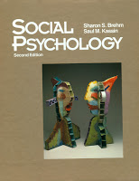

|
SOCIAL PSYCHOLOGY
|
|
- The Textbook of Social Psychology, 3rd Ed (Canadian)
JE Alcock, SW Sadava, DW Carment
1994 (orig 1987) | Prentice Hall Canada Inc. Scarborough
- CONTENTS
- not in library
- for class PS205
|
|

|
- Social Psychology, 2nd Ed. (American)
Sharon S. Brehm, Saul M. Kassin
1993 | Houghton Mifflin
- CONTENTS
- in library
- for class PS215
- use as contents for structuring notes
-
- ch1 Introduction to Social Psychology
- part1: Social Perception: Thinking About Ourselves and Others
-
- ch2 The Social Self
- ch3 Perceiving Persons
- ch4 Perceiving Groups
- part2: Social Interaction: Relating to Others
-
- ch5 Interpersonal Attraction
- ch6 Intimate Relationships
- ch7 Helping Others
- ch8 Aggression
- part3: Social Influence: Changing Attitudes and Behavior
-
- part4: Applying Social Psychology
-
|
- social psychology notes
- social psychology summary notes
|
REPORTS
- Social Dominance Report
- Formation of Social Dominance Structures in Young Children (1994)
- Observational study design.
- abstract:
- Regular exercise resulting from involvement in various sports activities used to be self-reinforcing. My goal in this self-modification project, was to return to a level of fitness so that sports activities would be reinforcing, and hence regular exercise would be maintained in the natural environment. Instead of participating in an overall fitness program which requires a lot of time out of the day, a specific exercise program for a chronic problem of mine, patellar tendinitis, was designed. Positive results in overall fitness level of the knee would be reinforcing because my knee is keeping me from performing some sport activities.
- method:
- Data is collected by checking frequencies of certain predefined behavior sequences, and then analyzed. The study tries to replicate a previous study of preschool children interacting, and observing social dominance behaviours.
- Job Satisfaction Report
- Job Satisfaction for Self-Employed versus Non-Self_Employed Individuals (1993)
- Social psychology research paper
- abstract:
- The purpose of this study will be to explore if there are differences in job satisfaction experienced by self-employed professionals versus hires professionals. Job satisfaction was measured with a mail survey containing “Jog Involvement Scale”. Job involvement is a form of work autonomy which leads to intrinsic job satisfaction. It was predicted that self-employed professionals have greater job satisfaction.
PS100 SOCIAL PSYCHOLOGY
- part3 SOCIAL BEHAVIOR (our interactions with others) How do humans interact?
- biological basis of social behavior
- the individual and society:
- psychodynamics
- social cognition and emotion
- social interaction
SOCIAL BEHAVIOR
- ch10) The Biological Basis of Social Behavior | Review ch10
- Social Nature of Humans and Animals
- natural selection and survival | built-in social behaviors
- Biological Sources of Aggression
- conflict between species: predation and defense | conflict between like and like
- Biological Basis of Love: the Male-Female Bond
- sexual behavior | sexual choice | reproduction and timing | evolution and mating systems
- Biological Basis of Love: the Parent-Child Bond
- infant's attachment to mother | mother's attachment to infant
- Communicating Motives
- expressive movements: animal display | expression and emotions in humans | difference between display and language
- Self-Sacrifice and Altruism
- altruism in animals | altruism in humans
- Ethology and Human Nature
The Individual and Society
- ch11) Psychoanalysis | Review ch11
- Origins of Psychoanalytical Thought
- hysteria and hypnosis | resistance and repression
- Unconscious Conflict
- antagonists of inner conflict | nature of unconscious conflict | origins of unconscious conflict | windows into the unconscious
- Reexamination of Freudian Theory
- testing Freud's theories of repression and defense | problems of Freud's dream theory | biology or culture? | critiques of Freud's theories of development
- Freud's Contributions in Retrospect
- ch12) Social Cognition and Emotion | Review ch12
- Social Cognition and Social Reality
- interpersonal nature of belief | social comparison | cognitive processes and belief
- Attitudes
- attitudes and behavior | attitude change | attitude stability
- Perceiving Others
- forming impressions | impressions of others as patterns | impressions of others as cognitive constructions | impression management
- Attribution
- attribution as a rational process | errors in attribution process
- Perceiving Oneself
- the self concept and others | self-perception and attribution
- Emotion: Perceiving One's Own Inner States
- James-Lange theory | Cognitive Arousal theory of emotion | complex emotions | emotion and the theater
- Taking Stock
Social Interaction
- ch13) Social Interaction | Review ch13
- Relating to Others: One-to-One Interactions
- social exchange | reciprocity | altruism | attraction | love
- Social Influence: Many-on-One Interactions
- social facilitation: social influence by mere presence | conformity | blind obedience | social impact theory
- Crowd Behavior: Many-on-many Interactions
- deindividuation and crowd behavior | cognitive factors and the panicky crowd | cognitive factors and the hostile crowd
- Generality of Social Psychology
back home
|